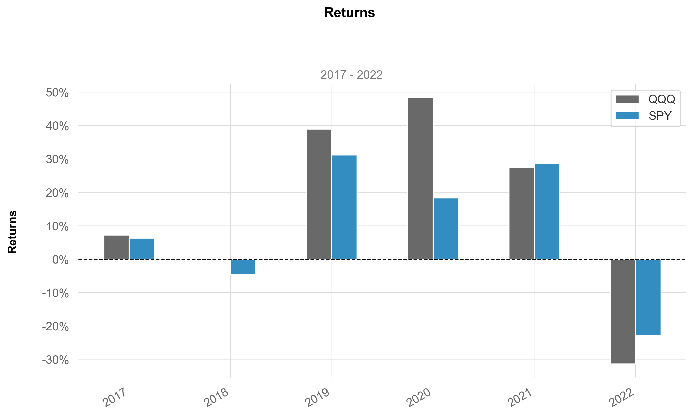
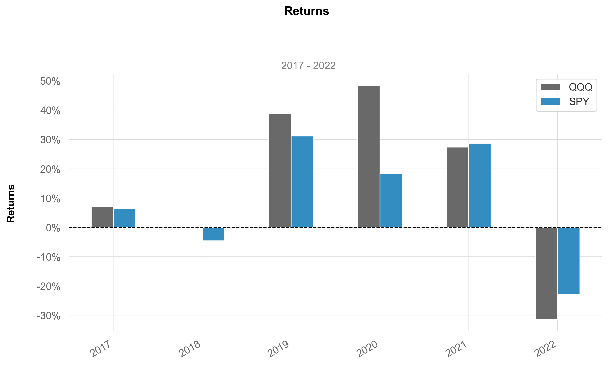
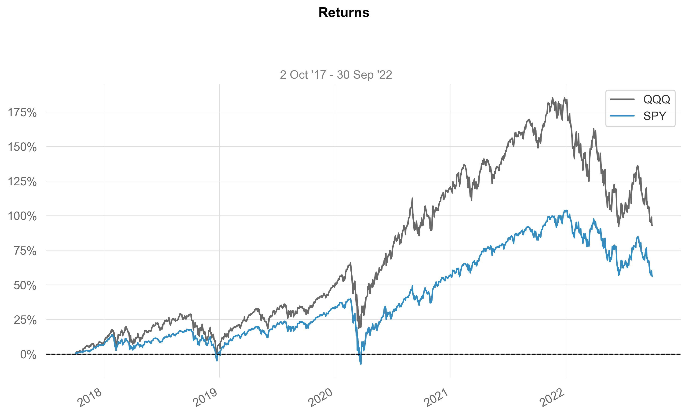
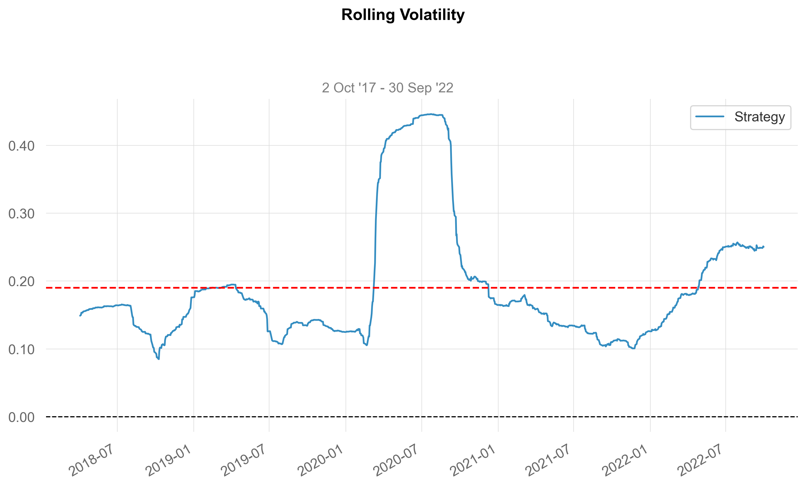
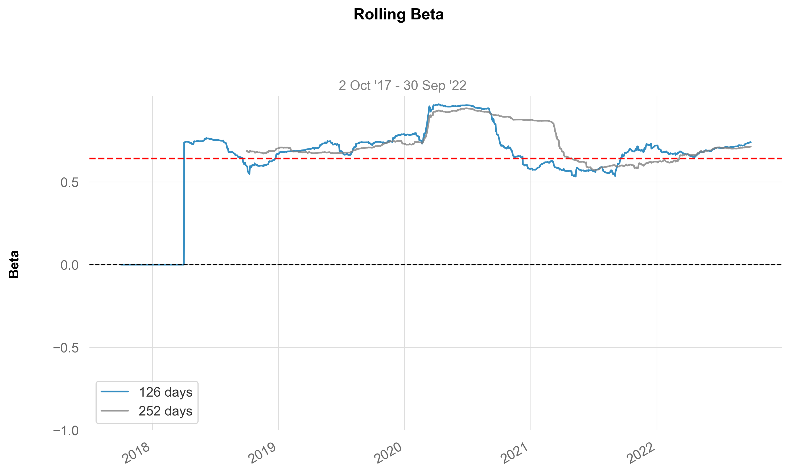

returns = _utils.download_returns('SPY', '5y')
benchmark = _utils.download_returns('QQQ', '5y')
plot_returns_bars(returns, benchmark, returns_label="SPY", benchmark_label="QQQ")
format_pct_axis (x, _)
format_cur_axis (x, _)
plot_returns_bars (returns, benchmark=None, returns_label='Strategy', benchmark_label='Benchmark', hline=None, hlw=None, hlcolor='red', hllabel='', resample='A', title='Returns', match_volatility=False, log_scale=False, figsize=(10, 6), grayscale=False, fontname='Arial', ylabel=True, subtitle=True, savefig=None, show=True)
returns = _utils.download_returns('SPY', '5y')
benchmark = _utils.download_returns('QQQ', '5y')
plot_returns_bars(returns, benchmark, returns_label="SPY", benchmark_label="QQQ")
plot_timeseries (returns, benchmark=None, title='Returns', compound=False, cumulative=True, fill=False, returns_label='Strategy', benchmark_label='Benchmark', hline=None, hlw=None, hlcolor='red', hllabel='', percent=True, match_volatility=False, log_scale=False, resample=None, lw=1.5, figsize=(10, 6), ylabel='', grayscale=False, fontname='Arial', subtitle=True, savefig=None, show=True)
returns = _utils.download_returns('SPY', '5y')
benchmark = _utils.download_returns('QQQ', '5y')
plot_timeseries(returns, benchmark, compound = True, returns_label="SPY", benchmark_label="QQQ")
plot_histogram (returns, resample='M', bins=20, fontname='Arial', grayscale=False, title='Returns', kde=True, figsize=(10, 6), ylabel=True, subtitle=True, compounded=True, savefig=None, show=True)
plot_rolling_stats (returns, benchmark=None, title='', returns_label='Strategy', benchmark_label='Benchmark', hline=None, hlw=None, hlcolor='red', hllabel='', lw=1.5, figsize=(10, 6), ylabel='', grayscale=False, fontname='Arial', subtitle=True, savefig=None, show=True)
returns = _stats.rolling_volatility(_utils.download_returns('SPY', '5y'))
plot_rolling_stats(returns, title = 'Rolling Volatility', hline=returns.mean(), hlw=1.5)
plot_rolling_beta (returns, benchmark, window1=126, window1_label='', window2=None, window2_label='', title='', hlcolor='red', figsize=(10, 6), grayscale=False, fontname='Arial', lw=1.5, ylabel=True, subtitle=True, savefig=None, show=True)
returns = _utils.download_returns('SPY', '5y')
benchmark = _utils.download_returns('QQQ', '5y')
plot_rolling_beta(returns, benchmark, title="Rolling Beta", window1_label='126 days', window2=252, window2_label='252 days')
plot_longest_drawdowns (returns, periods=5, lw=1.5, fontname='Arial', grayscale=False, log_scale=False, figsize=(10, 6), ylabel=True, subtitle=True, compounded=True, savefig=None, show=True)
plot_distribution (returns, figsize=(10, 6), fontname='Arial', grayscale=False, ylabel=True, subtitle=True, compounded=True, savefig=None, show=True)
plot_table (tbl, columns=None, title='', title_loc='left', header=True, colWidths=None, rowLoc='right', colLoc='right', colLabels=None, edges='horizontal', orient='horizontal', figsize=(5.5, 6), savefig=None, show=False)